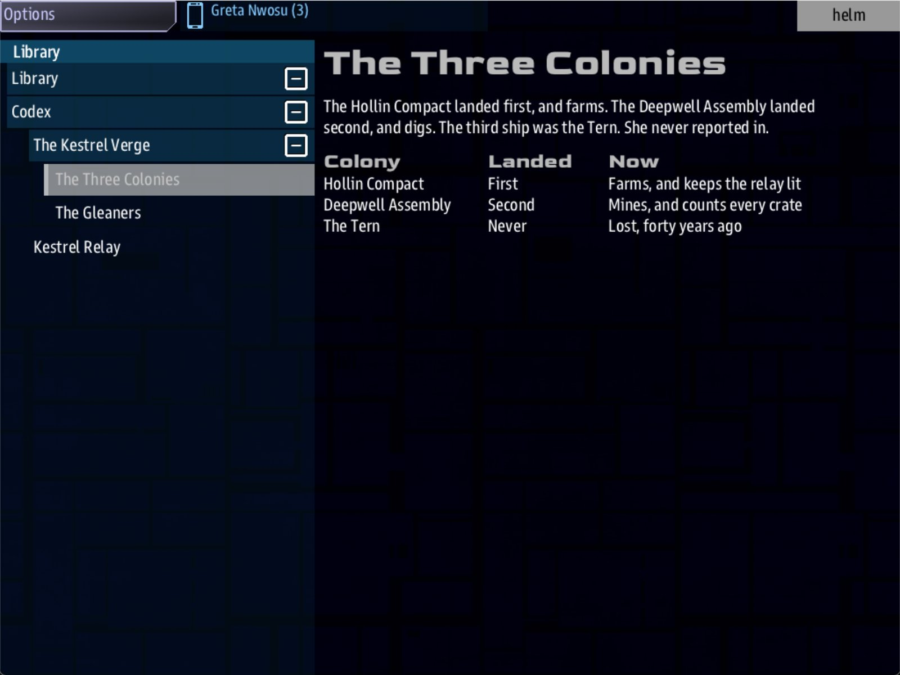

Class 5, Lecture 9 - Organizing a big universe¶
What you will have at the end¶
The same universe, in a shape you can keep working in. kestrel_verge.amd goes back to
being a table of contents with the world in it. The jobs live in a file of their own.
Each side's conversations live in a file of their own, in a folder. There is one new
voice, a duty officer the crew can hear from anywhere, and a short book of lore in the
crew's handheld.
And the whole world, printed: one document to read on paper, a script of every conversation, and a website you can open from a folder and hand to a co-writer.

The in-game Library, open at The Three Colonies: prose that lives in lore.amd.Nothing the crew can do changes in this lecture, apart from the new voice and the lore. You move text between files, and you run two new commands.
The video¶
About 6 minutes. Subtitles are available in the player.
Before you start¶
- Your
MyUniversemission as Lecture 8 left it.kestrel_verge.amdmatchesc5-08-captains-and-rivals\example\. sbs lint MyUniversesaysclean.- The game closed, and the save deleted:
C:\Cosmos\data\missions\common_data\saves\universe_save_the_kestrel_verge_1.yaml. - Make a copy of the whole
MyUniversefolder before you begin. This lecture is cut and paste, and a copy is the cheapest undo there is.
Words for this lecture:
| Word | Meaning |
|---|---|
| Chapter file | A file that holds the records of one chapter. The main file names it |
| Cast | People who are not captains and not sides: voices the crew can hear |
| Lore | Reading matter for the crew. It does nothing. It is there to be read |
| Edition | One way of printing your files: as a book, a catalog, a script, or a design document |
Step 1 - How a chapter reads from a file¶
A chapter in your main file is a heading with records under it. A chapter can also be a heading with a fence, and one line in the fence:
File: names a file in the mission folder. When the game starts, it reads that file and
puts its records into this chapter, as if you had typed them there.
Three rules. The first two are mistakes waiting for you in Step 8.
- In a chapter file, every record starts with one hash. In the main file a job is
### [Patrol](patrol), because it sits under a title and a chapter. A chapter file has no title and no chapter heading. Its records are the top of the file. - Several files go on one line, with commas.
File: a.amd, b.amd. AFile:line for each file, one under another, works as well: both ways were played, and every file was read. This page uses the commas. - A chapter reads from files, or holds records. Keep to one. Both together do work: the game reads the files and the records under the fence, and lint checks them all. But then one chapter lives in two places, and the point of today is that you know where to look.
Step 2 - The jobs¶
In VS Code, make a new file in the MyUniverse folder and call it jobs.amd.
In kestrel_verge.amd, find ## [Jobs](jobs). Select from ### [Patrol](patrol) down
to the last line of Clear the Lanes, cut, and paste into jobs.amd.
In jobs.amd, use Replace All to change ### [ into # [. It should make six
changes. The top of the file now reads:
# [Patrol](patrol)
---
Tier: 2
Done when: destroy 3 enemies
Reward: 200 credits
---
Sweep a system and clear whatever is hunting in it.
# [Escort](escort)
---
Done when: reach 3, 1
Reward: 250 credits
---
See a freighter safely to its destination.
You may put a note at the top of a chapter file, on lines that begin with //. The game
does not read those lines.
// The jobs of the Kestrel Verge. This file is read into the Jobs chapter of
// kestrel_verge.amd. Each record here starts with ONE hash.
Back in kestrel_verge.amd, the Jobs chapter is now a heading with nothing under it.
Give it its fence, as in Step 1:
Save both files.
Step 3 - The conversations¶
Your Dialogue chapter has twenty records in it. Sort them by who is speaking.
In VS Code, make a new folder inside MyUniverse called dialogue, and three new files
in it.
| File | The records to move into it |
|---|---|
dialogue\hollin.amd |
Hollin Hail, The Levy, A Cold Answer, Hollin Out, and Edda's four |
dialogue\deepwell.amd |
Deepwell Hail, The Ledger, The Ledger Thrown, Deepwell Out |
dialogue\gleaners.amd |
Gleaner Hail, Nerve, Gleaners Out, and Sable's five |
Cut each group from kestrel_verge.amd and paste it into its file. In each of the three
files, Replace All ### [ with # [: eight changes, four, and eight.
A captain's records go with their side. That is a habit and not a rule: the game does not care which file a record came from, only which chapter it was read into.
The Dialogue chapter in kestrel_verge.amd is now empty. Give it its fence:
## [Dialogue](dialogue)
---
File: dialogue/hollin.amd, dialogue/deepwell.amd, dialogue/gleaners.amd
---
The folder and the file are joined with a forward slash, /.
Save all four files.
Step 4 - Check it¶
== dialogue\deepwell.amd ==
clean
== dialogue\gleaners.amd ==
clean
== dialogue\hollin.amd ==
clean
== jobs.amd ==
clean
== kestrel_verge.amd ==
clean
The last lines of that output come after Step 6, when there is one more file.
Lint now checks every file, and names each one. All five are clean.
One thing in your universe now crosses from file to file. In Lecture 7 an answer in the
Deepwell's hail sends the signal ledger_read, and a beat in the Narrative chapter
waits for it. The answer is in dialogue\deepwell.amd now, and the beat is still in
kestrel_verge.amd.
Lint reads the mission as one thing, as the game does. It sees the two ends meet, and says nothing. Misspell the word at either end and it tells you, in the file where the word is (Step 8 has the row).
Step 5 - A voice from anywhere¶
A captain is hailed at a station. A member of the cast needs no station. The game keeps them as a voice of their own on Comms, and the Open Universe's walkthrough says they can be hailed from anywhere, with nothing selected.
In kestrel_verge.amd, find ## [Dialogue](dialogue). In front of it, add a chapter:
## [Lifeforms](lifeforms)
### [Kestrel Traffic](kestrel_traffic)
---
Face: terran
Roles: hollin
Scene: traffic_hail
Color: #44aa66
---
The relay's duty voice. It answers on any channel, from anywhere in the Verge.
| Line | What it means |
|---|---|
## [Lifeforms](lifeforms) |
The chapter. The key must be lifeforms |
Face: |
terran, male or female. The game picks a face of that kind |
Roles: |
Words the game files this person under. A side's key is a good one |
Scene: |
The key of the record in the Dialogue chapter that is this person's voice |
Color: |
The color of their name, as a web color |
Now the voice. At the end of dialogue\hollin.amd, add three records. They start with
one hash, like everything else in that file.
# [Kestrel Traffic](traffic_hail)
---
Speaker: kestrel_traffic
When: comms
---
% Kestrel Traffic. The lamp is lit and the lanes are quiet. Go ahead.
% Kestrel Traffic. You are faint, captain, but we have you.
- [Ask where the work is](traffic_work)
- [Sign off](traffic_bye)
# [Where the Work Is](traffic_work)
---
Speaker: kestrel_traffic
---
% The Compact hires at the relay. The Assembly hires at the Assay Office, three east and one south. Nobody sane hires from the Gleaners.
# [Traffic Out](traffic_bye)
---
Speaker: kestrel_traffic
---
% Kestrel Traffic, listening.
Two greetings with no guard: the game says one or the other. A member of the cast keeps
no standing, so standing has nothing to read here and earns has nobody to earn with.
Use a cast voice for what the crew should always be able to find out.
Step 6 - A book of lore¶
Make one more file in the MyUniverse folder, called exactly lore.amd.
# [The Kestrel Verge](verge)
Past the last relay the charts are forty years old. Three colonies were planted out here. Two still answer.
Nobody has come out to correct the charts, so every captain keeps their own. Trade them, and trust them about as far as the captain who sold them.
## [The Three Colonies](colonies)
The Hollin Compact landed first, and farms. The Deepwell Assembly landed second, and digs. The third ship was the Tern. She never reported in.
| Colony | Landed | Now |
|---|---|---|
| Hollin Compact | First | Farms, and keeps the relay lit |
| Deepwell Assembly | Second | Mines, and counts every crate |
| The Tern | Never | Lost, forty years ago |
## [The Gleaners](gleaners)
Nobody planted the Gleaners. They came for the wrecks, and stayed when the wrecks ran short.
They fly old Torgoth hulls and keep a yard in the Breakers. Their prices are fair, and their questions are few.
# [Kestrel Relay](relay)
The last relay anyone still maintains. The Compact keeps its lamp lit, and Warden Brake has kept the Compact honest about it for thirty years.
## What it is for
Every message into or out of the Verge passes through the relay. A ship the relay cannot hear is a ship nobody will come looking for.
This file has no fences at all. A heading with a name and a key is a page, and the words under it are what the crew reads. One hash is a page; two hashes is a page inside the one above.
The words under a page are drawn the way a quest's are: an empty line between
paragraphs, a table where a table helps. ## What it is for has no square brackets, so
it is not a page of its own. It is a heading inside the Kestrel Relay page, in larger
gray letters. Give it brackets and a key, and it becomes a fifth page.
The crew's handheld has an app called Library. A mission with a lore.amd gets a
chapter in it called Codex, holding your pages. You do not name the file anywhere.
The game looks for that name.
Lore is where to put what a crew would know from living here, and what a new player does not: who the colonies are, what the relay is for. Keep the secrets of your story out of it.
Save, and lint once more. The end of its output now reads:
Step 7 - Print the world¶
Two commands turn your files into something to read. Neither starts the game.
A document.
Open that file in your browser. It is your universe as a book, in the order you wrote it, with a contents page. Print it from the browser, or save it as a PDF there.
There are four editions. Ask for all of them:
prose 6 files -> C:\Cosmos\data\missions\MyUniverse\__docs__\The Kestrel Verge-prose.html
catalog 6 files -> C:\Cosmos\data\missions\MyUniverse\__docs__\The Kestrel Verge-catalog.html
screenplay 6 files -> C:\Cosmos\data\missions\MyUniverse\__docs__\The Kestrel Verge-screenplay.html
bible 6 files -> C:\Cosmos\data\missions\MyUniverse\__docs__\The Kestrel Verge-bible.html
| Edition | What it is | Who it is for |
|---|---|---|
prose |
Every record, in the order of the files | You, reading the whole thing through |
catalog |
Records sorted by kind: the sides together, the jobs together | Looking something up |
screenplay |
Only the conversations, laid out as a script | Reading dialogue aloud, which is the best test of it |
bible |
The story's chapters with what starts each one and what it leads to | Finding the hole in a plot |
The bible is worth opening today. Under The Assay Ledger it says the beat is reached from The Third Colony and from Deepwell Hail. It has joined the signal across the two files, as lint did.
A website.
Open index.html in that folder. There is a page for each of your files, a menu, and a
search box. An answer in a conversation is a link to the record it leads to, so you can
click through a call the way the crew would play it. The folder needs no server: zip it
and send it.
For players. Both commands take --profile player. It leaves out what would spoil
the game: the guards, what an answer costs and earns, and what starts and ends each
quest.
-o says where to put it. The bible has no players' version. It is all spoilers, and
sbs docs refuses to make one.
Step 8 - What can go wrong in a split¶
Each row below was made on purpose, one change to the finished files, then linted, then played.
Mistakes lint finds
| The mistake | What the game does | What lint says |
|---|---|---|
Fil: jobs.amd |
No station offers any work | A warning: "Did you mean File?" (unknown-field) |
The fence left off round File: jobs.amd |
The same | An error: "the fields under ## [Jobs](jobs) have no --- lines round them" (fence-not-opened) |
The records in jobs.amd left at three hashes |
The jobs are read, and the game reports an error for each one | An error: "### [Patrol](patrol) has 3 hashes and there is no title above it" (heading-level-jump) |
The chapter's heading pasted into jobs.amd with the records |
The same, and there is a seventh job called Jobs | The same error, about ## [Jobs](jobs) |
A misspelled field in jobs.amd: Rewrad: |
The job pays nothing | A warning: "Did you mean Reward?" (unknown-field) |
A first word misspelled in jobs.amd: destory 3 enemies |
The job never finishes | The unknown-trigger warning from Lecture 6 |
An answer in dialogue\hollin.amd that names a record that is not there |
Not played | A warning: "points at hollin_levi, which resolves to no node" (dangling-choice) |
Speaker: sabel in dialogue\gleaners.amd |
No button to hail Sable | A warning: "gives its voice to sabel, who is not in the cast" (dangling-speaker). Lint does look across files for a speaker |
Scene: trafic_hail on Kestrel Traffic |
The voice has nothing to say | A warning: "Scene points at trafic_hail, which is not a defined node" (dangling-scene) |
| A curly quote or a long dash, in any of the files | Not played. Lint says the game draws a plain one in its place | A warning: "is not a plain keyboard character" (non-ascii) |
The signal's word misspelled on the beat: Done when: signal ledger_red |
The Assay Ledger never closes, as in Lecture 7 | Three warnings. One in the main file: "waits for the signal ledger_red, and nothing in the mission sends it" (unfired-signal). And one for each of the two answers in dialogue\deepwell.amd that send the right word (signal-no-route) |
| The word misspelled on one of the two answers | Not played | One warning, on that answer's line in dialogue\deepwell.amd (signal-no-route) |
Three things look wrong and are not, and lint says clean for each. Files: with an s
works. A File: line for each file, three lines where this page writes one, works: all
three files are read. And a record left in the main file under a chapter that has a
File: line works too (rule 3 in Step 1 is why this page does not do it).
Mistakes lint cannot see
Lint says clean for every one of these.
| The mistake | What the game does |
|---|---|
A file name that is not there: File: job.amd |
No station offers any work. The game's log says "job.amd not found" |
The folder left off: File: hollin.amd, deepwell.amd, gleaners.amd |
No conversations at all. No station has a Hail button |
| One file left off the list | Its conversations are gone. Nothing says so |
| A dialogue file named in the Jobs chapter | No station offers any work |
Done wen: in jobs.amd |
That job never finishes. In the main file lint caught this. In a chapter file it does not |
Tier: two in jobs.amd |
The mission stops working when Comms selects a station, as in Lecture 4 |
A misspelled word in a guard, in a dialogue file: %{standng >= -20} |
That line is never said, as in Lecture 4 |
## [Cast](cast) for the cast's chapter |
No cast. The key must be lifeforms |
No Scene: on a member of the cast |
The voice is there and has nothing to say |
lore.amd under another name |
No Codex in the Library |
So check these by eye:
- Every name after a
File:is a file that is there, with its folder and a forward slash. - Every record in a chapter file starts with one hash.
- After any change in
jobs.amd, read each job's four lines.
Step 9 - Play it¶
- In the
commswindow, select Hollin Compact. Its buttons are the ones it had in Lecture 8: Hail Hollin Compact, Hail Edda Brake, the Relay Warden, and Escort (250 cr). - Hail the Compact and pay the levy. Select the station again: Patrol (240 cr) and
Escort (300 cr). The jobs came from
jobs.amd, and the levy fromdialogue\hollin.amd. - Open the handheld, then Library. There is a chapter called Codex with your pages in it.
- Look for Kestrel Traffic on Comms. The game has made the voice and given it your record to speak. In the game's stand-in it is here: on Comms, select your own ship. The one button is Ultra-Beam, and it lists Kestrel Traffic. Press it for one of the two greetings, and Ask where the work is. Nobody has seen that screen in the real game yet.
- Play the story from Lecture 7 as far as the Assay Office. Pay the fee. The Assay Ledger closes, with the answer in one file and the beat in another.
After the game, read mast.runtime.log. It should be empty.
What you need to know about a split universe
| Fact | What it means for you |
|---|---|
| The game reads every file into one universe | A key is still one key across all your files. Two records with the same key in two dialogue files are still a clash |
A chapter file's name is yours to choose. lore.amd is not |
Jobs, dialogue and the rest are found by the File: line. Lore is found by its name |
| Lint reads a speaker and a signal across files, as the game does | A signal sent in one file and waited for in another is checked at both ends. A warning about a signal is yours to fix, whichever file it is in |
__docs__, __site__ and handout are made, not written |
Delete them whenever you like, and make them again. Never edit them: the next run replaces them |
| The editions are made from the files, as they are at that moment | Print after lint, not before. A document made from a broken file is a broken document |
If something goes wrong¶
| What you see | Likely cause |
|---|---|
| No work at any station | The Jobs chapter's File: line is misspelled, has no fence, or names a file that is not there |
| No Hail button on some stations | That side's dialogue file is not on the File: line |
| Lint has an error about hashes in a chapter file | A record there has three hashes. Replace All ### [ with # [ in that file |
| A job is called Jobs | The chapter's heading was pasted into jobs.amd |
| No Codex in the Library | The file is not called lore.amd, or it is not in the mission folder |
sbs docs made a file called MyUniverse-prose.html |
The --title was left off. The folder's name is used |
| The printed document is missing the jobs | Nothing. It prints each file as a chapter, and jobs.amd is the chapter called Jobs |
Exercise¶
- Split your own universe: the jobs into one file, and the conversations into one file for each side.
- Run lint, and fix what it finds until every file says
clean. - Write one cast voice that any crew, anywhere, can ask for directions.
- Write a
lore.amdof four pages. Leave one thing out of it on purpose, for the story to tell. - Print the screenplay edition and read one conversation aloud. Change one line because of what you heard.
- Make the players' website and open it. Is there anything in it you did not want a player to read?
Checkpoint¶
You are done when all five are true:
sbs lint MyUniversesayscleanfor all six files.- The crew is offered the same work and the same calls as before the split.
- The Library holds a Codex with your pages.
__docs__holds four editions with your universe's name on them.__site__\index.htmlopens, and an answer in a conversation is a link you can follow.
Next¶
Lecture 10 puts two boarding sites on the map: a place of rooms and choices, and a place with a map the party walks. Lecture 11 puts a ruin there: a place the crew flies into, and then goes outside in suits.
Further reading¶
default.amdin the Open Universe mission: a universe whose Jobs, Captains, Lifeforms and Dialogue chapters all read from files. Its Dialogue chapter writes fourFile:lines where this page writes one line with commas. Both work.- "Printing a mission:
sbs docs" and "Publishing AMD:sbs site" in the sbs_utils documentation: PDF output, and the other thingssbs sitecan make. - "Captains and the cast" in the Open Universe writer's walkthrough: passengers, who are cast members with somewhere to go.
Download this lecture's finished files (a zip of its example folder).